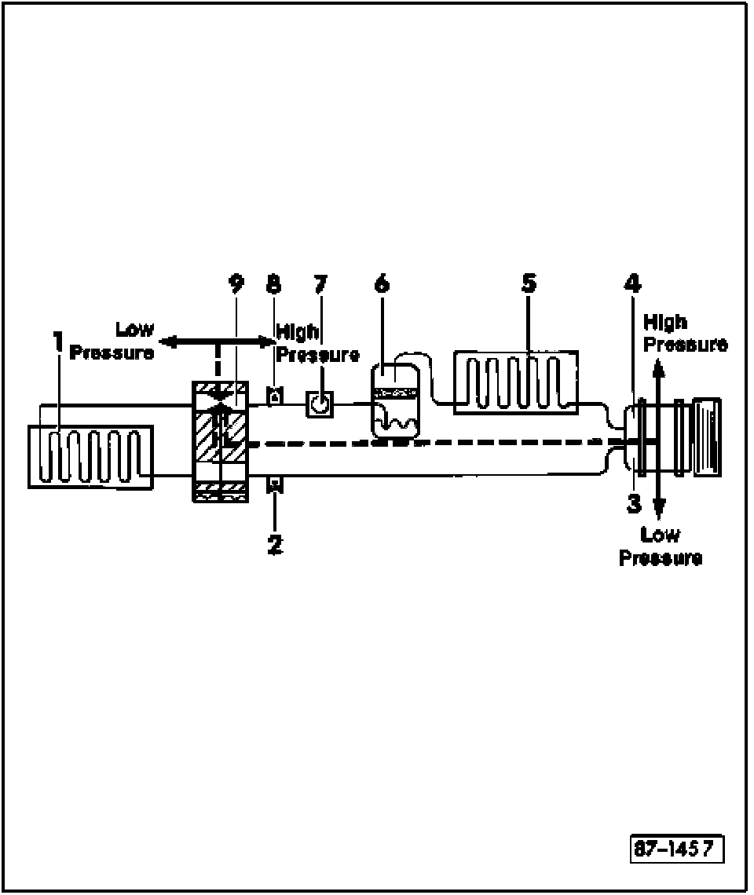
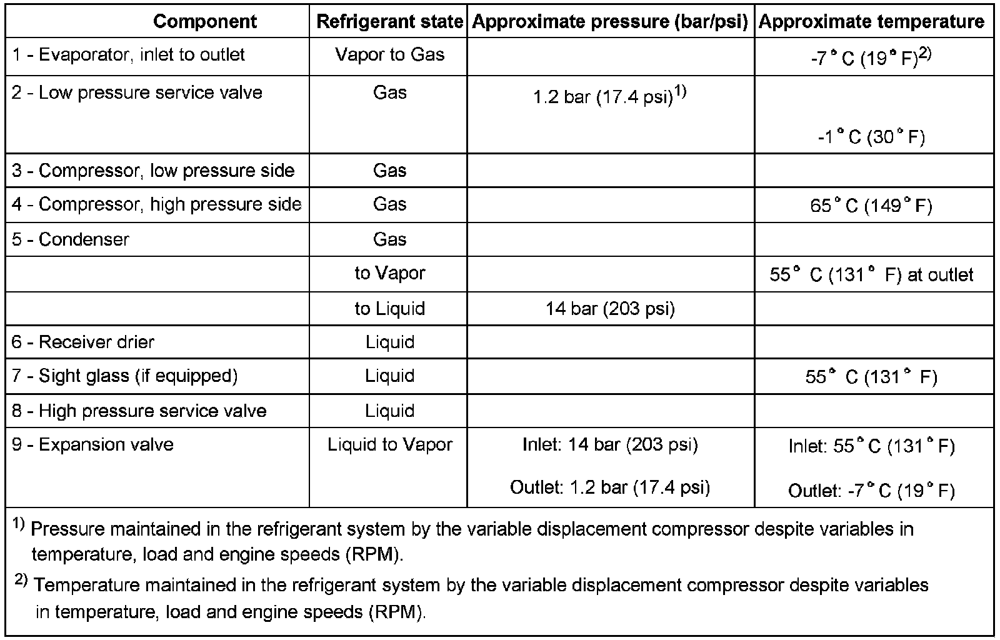

A/C Refrigerant System Pressures and Temperatures, Checking
A/C Refrigerant System Pressures And Temperatures, Checking
The pressures and temperatures in the A/C system will vary depending on engine speed (RPM), coolant fan speed, engine coolant temperature, compressor regulation, outside temperature, humidity, etc.
Pressure and temperature specifications are based on the following:
- Engine speed (RPM) at 1500
- Fresh air blower on high speed
- A/C adjusted to Max. cooling

1. Evaporator
2. Low pressure service valve
3. Compressor, low pressure side
4. Compressor, high pressure side
5. Condenser
6. Receiver drier
7. Sight glass
- If equipped
8. High pressure service valve
9. Expansion valve
Pressure and temperature specifications
